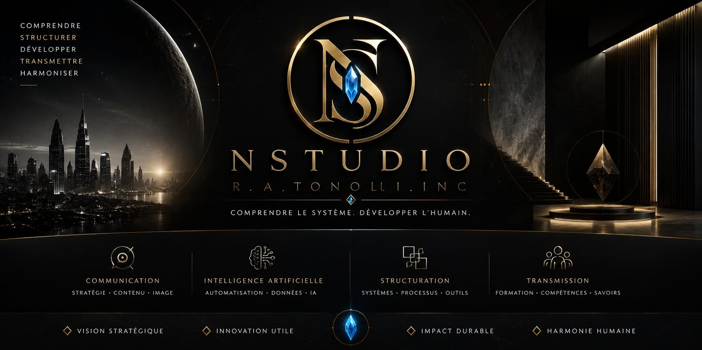

NStudio
Développer l'humain.
NStudio est un bureau numérique où les idées prennent forme, où les présences se structurent et où chaque projet reçoit une base claire, stable et évolutive.
Credo 1.618
Comprendre avant d'agir. Structurer avant de produire.
Transmettre avant de remplacer. Développer avant de contrôler.

Un lieu de travail numérique, calme et sécurisé.
Le client n'entre pas dans une simple page. Il entre dans un espace de clarté, pensé pour organiser sa présence, révéler sa valeur et créer une trajectoire.
Comprendre
Observer le système avant d'agir. Clarifier l'activité, les besoins, les flux et les priorités.
Structurer
Créer une base numérique propre : NScard, portail, ressources, accès et organisation.
Transmettre
Accompagner sans écraser. Donner au client des repères, des outils et une direction.
Quatre portes pour faire évoluer une présence.
NStudio travaille la communication comme un système vivant : image, intelligence, structure et transmission.
Vision stratégique
Comprendre les enjeux, voir l'essentiel et éclairer la direction.
Intelligence artificielle
Automatiser, analyser et générer de la valeur sans perdre la présence humaine.
Structuration
Organiser le système, les contenus, les processus et les points d'accès.
Transmission
Former, expliquer, accompagner et élever les compétences numériques.
Des portes numériques simples, vivantes et maîtrisées.
Une NScard rassemble l'essentiel d'une activité dans un espace clair, partageable, maintenu et prêt à évoluer.
NScard Exemple
Modèle de présentation pour une activité accompagnée dans l'écosystème NStudio.
Espace client
Ressources, demandes, livrables et suivi réunis dans un accès centralisé.
Base numérique
Un point d'ancrage pour commencer proprement, puis développer sans dispersion.
Une chambre de travail pour clarifier, produire et transmettre.
L'assistant NStudio soutient les contenus, les questions, les ressources et l'organisation. Il n'impose pas une réponse : il aide à rendre le système lisible.
La technologie reste au service de la présence humaine.
Entrer dans la bonne dimension numérique.
Pour créer une NScard, structurer une présence web ou préparer un espace d'accompagnement.
Contact direct
Présentez votre activité, votre projet ou votre besoin numérique. La réponse commencera toujours par la compréhension.